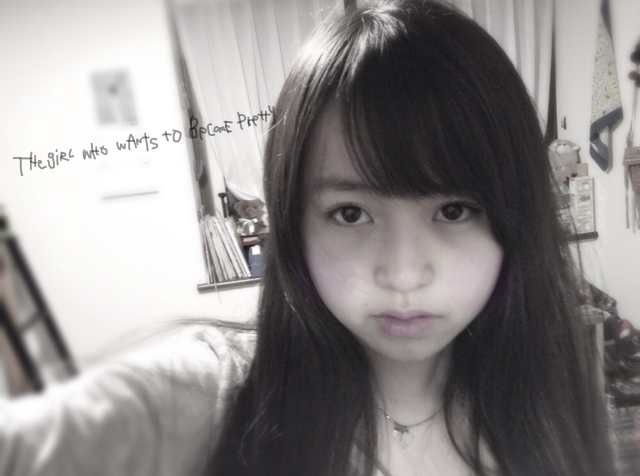
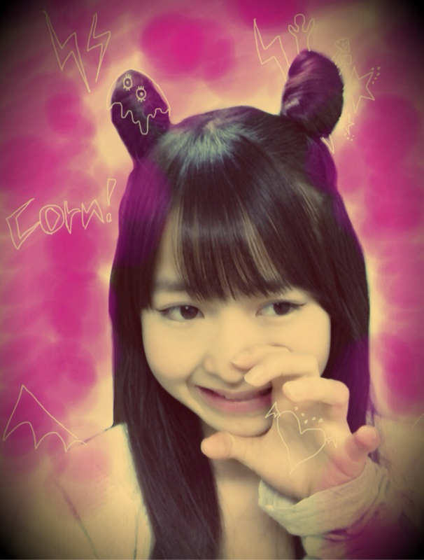
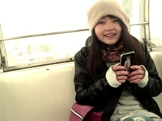
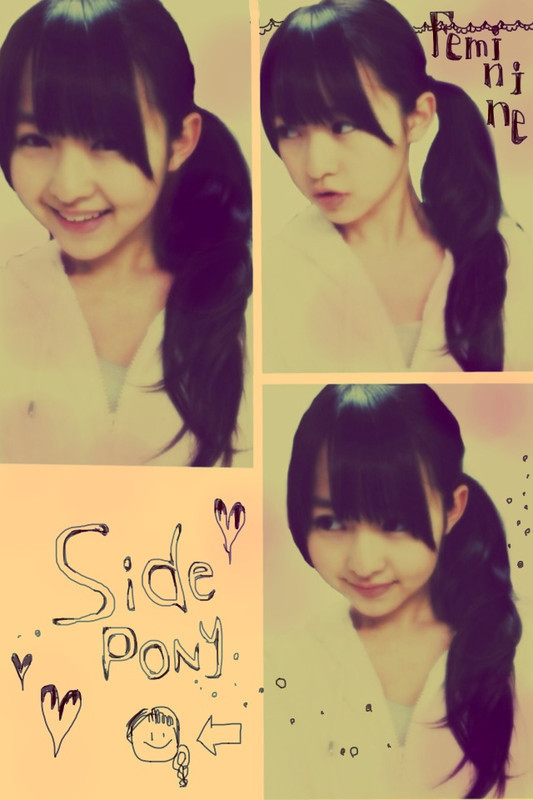
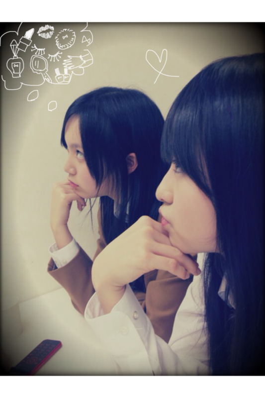

2012/0125Wed59回目*marika
まりかじゃぁい。
いつも読んでくださってる方、
初めて読んでくださった方、
コメントしてくださった方、
ありがとうございます:D
今日はいけるとこまで質問お答えするぜ。!!
............................
・ベビたんのほっぺの中には何が入ってるの?((←
*****
夢がいっぱい詰まってるのだ!!
....ちて←
・ベビたん文系か～！！
おれは理系だ！！
数学と理科、教えてあげようか？！笑
そのかわり、国語教えて！！特に古文！！
*****
ん〜;3!!
おしえて〜><
わたしゃ社会が好きや。
古文なんて難しいよ〜もうっ
・本当にまゆゆが乃木坂46に
完全移籍したら、どんな気持ちですか？
*****
まゆゆさんはAKB48のままでいてほしいな><
・もうすぐ誕生日ですが、
プレゼントでもらって嬉しい物って、
どう言う物ですか？
良かったら、参考にしたいので、
教えて頂けたら嬉しいです。
*****
何でもうれしいですよー♡
私に似合うものっ
とかかな??
でも、その気持ちだけでもうれしいです><
本当にありがとうございます><
・コメントって全部読んでるの(･･)？
・過去のｺﾒﾝﾄとか見てるの??
*****
もしかしたら見逃してるのが
あるかもしれません><
でも、ケータイ見るたびチェックしてます♡
そして過去のも読むことあります♡
・まりりんは絶叫マシンは好きな方なの？
一番好きな絶叫ってなにかな？
*****
ジェットコースターたのっし----ですよ:3
お化け屋敷とかぜっったいムリやけど
絶叫マシンはいける^^☆☆
・最後にひめたんの写真ありがとう(v^-ﾟ)
ひめたん、何見てるの？
・ひめたんは、今おしゃれに興味があるのかな？？？
*****
ひめかっぽいのって女の子らしいのやから
お化粧品をかいてみたのん^^えへ
・個別何枚とろうーーーー
何部がいいーーーー？
*****
おまかせ:-Dしますっ♡
・私よりも頭のいい子が私と一緒に
中学受験をして残念な事に
２人とも落ちてしまいました
私は全然ショックではなかったのですが
友達は塾の曜日を変えてまだ会えていません
今度定着度テストで会うことになっています
なんて声をかければいいですか？
*****
とても友達想いなんですね^^*
今まで通りで良いと思います。
相手の空気に合わせることも大事だと思います><
その子から話しかけてくれたら、
その子のテンションに合わせれば良いと思う。
自分だったらそうします。
すごく簡単な答え方になってしまいましたが
そんなに悩む必要ないんじゃないかな?
お互い励まし合って前に進む!!
受験がんばってください!!
応援してます。
・ナガシマスパーランドのスチールドラゴン
って乗ったことありますか？
*****
えー!!絶叫マシンですか??
それはぜひ乗りたいな笑
・やっぱりべびたんの加工好きっ＊
うま過ぎて尊敬ーっ！真似していい？
*****
やばいですうれしすぎます//////
あーあーてれちゃうよ。
まりかでれでれだよ。
うん♡いいよっ:D!!
・乃木坂メンバーの中で一番かわいい！
って思うの誰？
*****
ねねとひめかとみなみとあすかと..........
１人に絞るのは不可能だっ←
・べびたんが握手会でしてほしい話題って？
*****
え〜*^^*
ん〜.....
私のどこを好きになったか教えて←
調子のった笑^^てへぺろ
・パーマ当ててる男ってどないかな？
*****
パーマ!!
かっくいい〜:Dきらきら
なんかおしゃれだなって思います*
・まりかは焼肉なら何が一番好き？俺はハラミ！！
*****
タン塩でしょう!!
カルビをサンチュに巻いて食べるの最高でしょう!!
この前メンバーと行った時ハラミ食べました:)
いや〜おいしかったわあぁ♡じゅるり
・ツノヘアーって発想が面白いね
このヘアアレンジってファッション誌とかに
載ってたの？それとも自分で考えたの？
*****
だいぶ前のBloGでヘアアレンジのリクエストで
いただいたんです~^^
ツノヘアー気に入っちゃた♡**
ちなみに今までやったのは
3回目 ポニーテール
17回目 ハーフアップポニーテール
19回目 ツインテール
28回目 お団子
53回目 ハーフアップツインテール
56回目 ゆる巻きサイド
57回目 ツノヘアー
けっこうアレンジした!!
興味があればぜひ見ちゃってください:^)
・最近映画館で映画見た？
*****
見てない><
AKBさんのドキュメンタリーを見て
たくさん学びたいです。
・僕は、家の事情で、個別握手会には行けなくて、
全握しか行けないんだけど、それでもいい？
*****
うんうん!!まってる!!
早く会いたいね^^♡
・俺のコメントを読んでベビたんが少しでも
元気になってくれたら嬉しいけど。
俺のコメント面白いですか？（笑）
*****
もう元気元気!!笑
うん^^
みなさんからのコメント、
うれしくてにやにや,
じゃなくてにこにこして読んでます♡
・待ち受けまだー？(笑)
でら楽しみだから待ち遠しい
*****
待たせてしまっててごめんなさいぃx(
最新だとツノと下の方でツインが
お気に入りなのですが
ダウンで撮った方がいいかな??
・ナゲットソースですが『バーベキュー派』ですか？
それとも、『マスタード派』ですか？
*****
断然マスタード派!!
・ﾌｧﾝﾚとか送って､大丈夫ですか??
*****
うれしい♡
何回も読んじゃうもんね〜
・ベビたんってお喋りすき？:P
*****
うん!!
自分おしゃべりやしね^^
ぺらっぺらぺらっぺらよ笑
・ｳﾁゎ寒いの苦手なんですけど、
寒さ対策とかしていたら教えてください;)
*****
私はユニクロ様のヒートテック二枚で
寒さをしのいでます!!笑
・果たして僕のコメントはベビたんに
何かを与えられているのでしょうか？？？
*****
笑顔と元気とほかほかあったかい気持ち^^♡へへ
・いくちゃんに書いてもらった似顔絵ないのー？
*****
ちょと探してみる〜!!
なかったらまた描いてもらおうか笑
・お気に入り絵文字知りたいなぁ＼^^／
*****
ハート
イナズマ
キッス
かわゆいよねっ:D
・握手会の時は、握手券をまとめて出した方がいい？
それとも1回ずつ回った方がいい？
*****
おまかせします〜^^にひにひ
・雪かきしたことある？
*****
雪かきする時すごい声出ますよね笑
「ふんぬあああぁあぁっっいよっしゃあぁぁ」
スコップで雪を後ろに投げれた瞬間の
爽快感!!!!きらきら
............................
写真のアプリはぜひ57回目参照してください=3

下北FM☆26日
とまととひめかと頑張ってきます^^へへへ
みなさんつるんすてんしませんでしたか><
私はなんとかバランス保ちました笑
では0時過ぎたので
今日も一日頑張りまりか〜☆
ベビたん*****bA by marika
2012/0124Tue58回目*marika
{kind=link}
{kind=link}
いつも読んでくださってる方、
初めて読んでくださった方、
コメントしてくださった方、
ありがとうございます＊
おはようまりかですよ。
何回もつるんてコケかけたまりかですよ。つるんすてん
昨日は雪でしたね＊＊
さむかったさむかった><//
昨日の夜に更新できんかった><
なんで朝更新するよん:3
昨日のLessonはダンスダンスダンス‼‼
練習でした。
やっぱダンスは楽しいなあ♪
ぐるぐるカーテンのダンスめっちゃすき♡♡
一枚目はLesson前に仲良し2人と撮ったの:D!!
笑。
二枚目は伊藤ちゃんず♡‼
今日は内容薄くてすまぬな><
みなさん、つるんすてんしないように気をつけて‼
あったかくして出かけてください。
では、学校頑張ってくる~^^/
お仕事、学校みんな頑張りまりか☆
ベビたん*****bA by marika
2012/0123Mon57回目*marika
＼こんばんはっっっ／
いつも読んでくださってる方、
初めて読んでくださった方、
コメントしてくださった方、
ありがとうございます^^
*****HaPPy BirThDAy*****
れな、いくちゃん♡2012.1.22
おめでとさん!!!
れな、
いつも仲良くしてくれて
ありがとおぉっ♡
お互いこれからもふざけ合おうに:D
いくちゃん、
だいぶ前のmeijiの撮影の時
私の似顔絵描いてもらったけど
うん...!!ん〜笑。←
そんなところがまた
どっか抜けててかわいい子ね^^♡
2人ともめっちゃ
しっかり者でまじめで!
透き通った2人の声すきです:)
だいすき ♡**
2人にとって良い一年になりますように...☆
にひ。
今日はこんなアレンジしてみました。
でっで---------------ん:D

ツノヘアー♡
....耳みたいやけどねん
メイクね。
ほぼすっぺんぺんですけど
目尻に長めにアイライン引いてみたら
いつもとちょいと違うお顔に...♪ふふふん
いっぱい落書きで遊んでみたよ ^^
楽しいわね、落書きって。
ふらりと古着屋さんに寄ったら
ツノ付きのニット帽とか
猫耳のニット帽が売ってて
めちゃかわゆかった:3
今日はみんなであるものを見てました!!
教えてあげよっか??
.......おしえな----い:^D
むふふ。
みなさんはお楽しみにやね♪
今日はみなさんからいただいた
コメントを読み返していました**
毎回、何度も思いますが
みなさんは本当に優しいなぁ。
と思っています。
私のBloGをいつも楽しみに
してくださってて....
だから毎回BloG長くなっちゃうのよ~~~!!!
ちゃんと読んでくださって!
本当にありがとうございます;)
毎回私はみなさんからのコメントを
とってもとっても楽しみにしてます^^
すごく元気になるし、笑顔になるし、
魔法みたい!!
質問も答え忘れてしまったり、
変に答えてしまったりとありますが
これからもまりかを
よろしくお願いします****
........て!!
急にあらたまっちゃたよ!!
でもそのぐらいファミリーが
だいすきなの!♡
だいすきやっ てれ
てれ
ああ〜///
もう...なんじゃいっ
すきすぎてどうしようもないです:( !
みなさんに私のこと
もっとすきになってほしいなあ。
まりかしかっ
ベビたんしかっ
になってもらえるように
頑張ります＊。きらん
あっ。
最近気づいたんですけど
私の口癖
「なんじゃい」
みたいなんです。
なんでかわからんけど><
自分でもよく言ってる気がして..
お手紙や年賀状を送ってくださった方。
きっと届いてると思いますが
私はまだ見れていません;(
早くお返事を返したいのに
ごめんなさい><
質問はまたまとめてお答えします＊

まひろと乗った観覧車で
寒すぎて首がなくなってもうたまりか
最近アーモンドばりばりぼりぼり食べてます。
おいしい。
今日もみんなお疲れさまりか♪
明日もがんばろーぅ!!
ベビたん*****bA by marika
2012/0121Sat56回目*marika
いつも読んでくださってる方、
初めて読んでくださった方、
コメントしてくださった方、
ありがとうございます!!
まりかです。
みなさん、あたたかいコメント、
乃木坂のファミリーであるみなさんの
気持ちを書いてくださって
ありがとうございました。
乃木坂46全員での舞台、
みなさんの前で、特別な
最高の舞台を披露したいです。
私が舞台で歌って踊って
キラキラした笑顔を
乃木坂ファミリーに届けたいです!!
それが私の初舞台です。
いつもあたたかく見守ってくださる
みなさんがだいすきです。
今日は話したいこと沢山あるから
めっっっっちゃ長いBloGになりますが
最後までつきあってね^^♡
......................
・お肌とぅるとぅるだけど
なんか特別なことしてるの〜っ？
*****
とっとぅるとぅる♡!?
わ〜うれしい♪
特別なことは特に何もしていません。
化粧水、乳液...くらいです。
でもお仕事の前日はパック!!!!!笑
・握手会の時に、ハーフアップツインにしてくれますか？
*****
そうだな。
ダウンばっかりだから、もしできたらします☆
・きゃりーぱみゅぱみゅさんとか、好き？
*****
かーわいーですよね♡
服装も奇抜で派手派手でアート作品だ!!
と思うくらい素敵だし、尊敬します＊!!
・握手会で｢いつもコメントしている♪
まめちょこω♪です｣って言ったらわかりますか？ww
*****
わかります:3♪にひっ
・べびたんの最近のマイブームは？
*****
落書きとかかしら^^むふ
おひげさんとか猫耳とか...!!
・マスクしながら寝て息苦しくないん？笑っ
*****
慣れたかな☆!!
朝起きたらマスク消えてるけど笑←
風邪が治りそうだなって思うから
今はつけて寝ます:-D
・今までは、『テンション高山』でしたが、
これからは『テンション高マリカ』にしますね(笑)
*****
やーうれしい!!
高まりか高まりか〜:Dきらきら
・具体的に行きたい学科とかあるのかな？
べびたんは理系、文系、まだ決めてない？
*****
一応は決めてます^^*
これからどうなるかはわからないから...
でも、理系、文系かっていったら
絶対文系です!!
理科も数学もできないっ←
・やっぱりべびたんのデコり尊敬！
師匠と呼んでいいですか？(笑)
*****
ありがとうございます!!
師匠!??
しっ、師匠....
堅いからいつも通り呼んでっ♡笑
・この画像のアプリなんてゆーのー((((；ﾟДﾟ)))))))❤？
・写真のアプリって何か教えてほしいです(>_<)♪
*****
あの写真は『PIxlromatic』です＊
「一眼カメラ」
とかも良いですよ=3
・確か以前貧血ぎみだって
言ってたけどその後どうですか？
*****
心配してくださってたのに感動><
ありがとうございます。
最近は貧血になっていないので
大丈夫ですっ☆元気もりもり
鉄分鉄分っ☆
・色んな占いって信じるほう？
*****
そうですね...
星占い信じちゃう笑
・Ｗ伊藤で歌うとどうなるの？？
ハモれるの？どっちが高音？
*****
私の方が高いかな??
学校での合唱のパートもずっとソプラノだったから..
んじゃ、伊藤ちゃんずで合唱するしかっ笑
・まりかちゃんのファッション好みです。
よく行くショップはどこですか？
*****
本当ですか!♡
うれしい!!!!
よく行くのは...ラフォーレ。
ParAvionとかRNA-N-とか
好きなブランド沢山入ってるから♡
あとは古着屋よく行きます:3
・私服も、デニム姿が珍しく感じるー！
デニムも結構はくの??(^ω^)
*****
珍しいですか?
けっこう履きますよ!!
スキニー以外にもボーイフレンドデニムは
楽だからよく履きます＊
・伊藤ちゃんずの写真は、
ベビたんの目が何だかいつもと感じが違うのはナゼ？？？
わからないけど....
メイクルームの照明でかな><
カラコンは入れてないですよ〜
・プリザーブドライフラワーって知ってる？？？
*****
知ってます!!
きれいですよね♡
普通のお花もすきだけど
私はドライフラワーもすきです*
色がちょと渋くなってかわいいっ。
・僕はべびたんと同じ高1なんですけど、
なかなか勉強する気が出ません。
そんな時はどうすればいいの？
教えて～(；´Д`A
*****
私がテスト勉強する時は
自分の部屋じゃなくてリビングでやっています!!
自分の部屋だとすきなものが
手に届く所にあるからつい手を出しちゃう><
あと、勉強する気が起きないときに
なんとなくでいいから
椅子に座って同じ単語とか文章を何回か書いていると
自然と覚えて次も書こう!!ていう気になりますよ!!
一緒に頑張ろうー☆☆
・ベビたんは、昔どんな髪型よくしてたんですかー？
*****
もういろんな!!
中1の頃は学校でのヘアアレンジに夢中だったから
友達に
「今日はこの髪型なんだね!」
みたいなこと言われてました笑
基本お団子中心で。笑
・年下ですけどタメ口も今度から
いれてもいいですか？
*****
いいですよぉ^^＊!!
タメ口だと...なんだか親近感...♡←
・女のファンってどう思う？
*****
女の子♡♡きゃー←
女の子同士だといろんなこと話せるし♪
仲良くしたいな♡
......................
昨日はねね、せいたん、ひめか、らりん、
まいまい、みゅうみゅう、ちま、とまと、まあやと
大人数でご飯食べましたー♡
焼き肉!韓国料理!めっちゃおいしかった♪
そんで、私がお肉焼いてたらちまに
「今日のべびたんなんか違うね。大人っぽいね」
てゆわれちゃたよ~てれてれ
そりゃ私だってお肉焼けるしっ笑
...お皿だって配るわよっ笑
2012年の目標だかんね〜どやぁ!!
ではゆる巻きサイド!
でで--------ん

みなさん、写真についての
質問回答ありがとうございました**
気分でいいんじゃないかという意見をいただきます><
今日は複数にしました。
見にくかったらすみません;(
*****
まゆゆさん主演ドラマ
『さばドル』2話
に乃木坂46が出演しました。*＊
私もレッスンシーンで参加しました><
まゆゆさんが隣で心臓ばくばくしてました。
初めてドラマの撮影に参加して
撮影がどれだけ大変かというのを
実感しました。
演技の練習、頑張ります!!
*****
今日のお話＊
今日はまひろと約束してた
遊園地に行ってきましたえへ
えっ!？なんで雨なのに行ったかって!??
天気なんかにゃ関係ない!!
「雨でも楽しいって思えば楽しい♪」
だから今日まひろと
「寒いていうの禁句な」
て約束してました♪
雨の中テントの下でのラーメンは最高や
って言い合ってたな笑
でもジェットコースター乗ってたときに
氷が降ってきて
きゃーーて叫ぶどころが
「いたいいたいいたいいたーーーい」
やった。
あー楽しかった。!!
ちゃんとメイクしたのに
乗り終えた後ん髪ぼっさーぐっしゃー笑
でもそんなの気にしない!
楽しいのがいい!!
その後はいろんなとこ行って
夕飯食べながら
語ってました:3
今度は晴れた日にも行こか＊
で、家帰ったら
親友と久しぶりに電話しました。うふ
「まりか変わったね。ギャグ線増したね笑」
....だって!!
それはね、久しぶりに話せたからなのよ!
テンション高まりかだったもの!!
「元気になった。ありがとう」
ていわれてめちゃうれしかった***
ん!いつでも相談しなさい:-)
....今日のお話でした♪ちゃんちゃん

かわいらしいひめかが考えてること....^^♪
みなさん、風邪の心配ありがとうございます><
そこまでひどくなくなったので
大丈夫です:-D
みなさんも風邪に気をつけてください!。
明日も雨なのでめっっちゃ寒いので
ダウンなど防寒をして外出してください＊
みなさん、今日もお仕事勉強
お疲れさまりか＊
明日も元気に頑張りまりか!

ベビたん*****bA by marika
2012/0120Fri55回目*marika
いつも読んでくださってる方、
初めて読んでくださった方、
コメントしてくださった方、
ありがとうございます＊
19日にAKB48さんの
リクエストアワーに乃木坂46が
出演させていただきました。
デビュー曲の
『ぐるぐるカーテン』
AKBさんが歌う前、
いちばん最初に。
モニターで見ていた私ですが、
始まる瞬間の大きなコール、サイリウムに
圧倒されました。
画面上でもこんなに鳥肌が立つくらいなのに
舞台袖で待っている選抜メンバーは
今どんなに緊張しているのかな。
モニターを見ながら
思っていました。
選抜メンバーのみんなが
キラキラした笑顔で踊ったのを見て、
すごいホッとして。
そしたら、すごい涙が出てきて...
「ああ、本当に選抜メンバーは
気持ちに負けないで頑張ったんだな」
「舞台に立ちたかった」
２つの気持ちがあって、
複雑な心境でした。
終わって選抜メンバーが
戻ってきた時、
みんな泣いてました。
みんなで泣きました。
メンバーそれぞれいろいろな気持ちで
泣いていたと思います。
みんなが泣いている姿を見て思いました。
乃木坂全員で
乃木坂だけの舞台で
みなさんが笑顔になるような
感動するような
最高の舞台に立ちたい。
前に進むしかない。
追いかけて追い越してみせる。
私はみなさんと約束したから。
乃木坂46全員での舞台。
キラキラの笑顔で舞台に立ちます。
待っていてください!!
ベビたん*****bA by marika